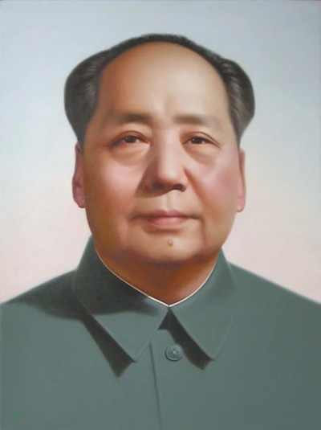

毛泽东（1893年12月26日－1976年9月9日），字润之（又作润芝），笔名子任。 中国共产党、中国人民解放军、中华人民共和国的主要缔造者，伟大的无产阶级革命家、战略家、理论家， 马克思列宁主义者，中国各族人民的伟大领袖，近代以来中国伟大的爱国者和民族英雄。
毛泽东于1893年出生在湖南湘潭一个农民家庭。他在青年时期就读于湖南省立第一师范学校， 在那里接触到了大量的新思想，并逐渐形成了自己的革命理念。
毛泽东是中国共产党、中国人民解放军和中华人民共和国的主要创建人之一。 他提出了许多重要的理论观点，对中国的历史发展产生了深远影响。
毛泽东曾担任中共中央主席、中央军事委员会主席以及全国人民代表大会常务委员会名誉主席等重要职位。